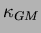

Next:
Overview
Implementation of the GM/Redi/Griffies schemes in the MIT OGCM
A.Adcroft and C.Hill, MIT
July 2000
Overview
Redi scheme: Isopycnal diffusion
GM parameterization
Griffies Skew Flux
Variable 
Tapering and stability
Discretisation and code
subroutine RediTensor()
subroutine inc_tracer()
Outstanding issues?
About this document ...
chris 2001-05-20